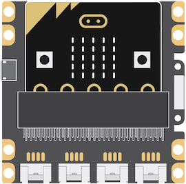
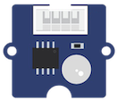
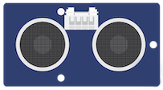
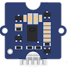
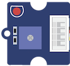
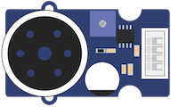
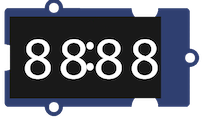
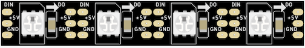

Le kit Grove pour micro:bit
Référence : Grove Inventor kit
Le shield

Ce shield est une carte d'interface permettant de raccorder facilement et sans soudure les capteurs et les actionneurs Grove de Seeedstudio sur une carte micro:bit.
Ce shield comporte :
- 4 connecteurs Grove : I2C, P0/P14, P1/P15, P2/P16
- 8 connecteurs Edge pour pince crocodile ou fiche banane : 3V3, P0, P1, P2, P8, P12, P13, GND
- un port micro-USB permettant une alimentation de la carte micro:bit et des différents capteurs et modules
- une LED verte de mise sous tension.
Référence : Grove Shield
Capteurs
Capteurs analogiques
Si le capteur est branché sur la broche P0, la mesure analogique réalisée par le capteur est convertie en une valeur numérique entière comprise entre 0 et 1023 que l'on lit avec l'instruction :
pin0.read_analog()
Le capteur d'angle rotatif (ou potentiomètre) produit une sortie analogique variable selon l'angle de rotation. La plage angulaire est de 300 degrés avec un changement linéaire de valeur.
Référence : Grove-Rotary_Angle_Sensor

Le capteur Grove - Light intègre une photo-résistance pour détecter l'intensité de la lumière. Le signal de sortie est une valeur analogique : plus la lumière est brillante, plus la valeur est élevée.
Référence : Grove-Light_Sensor
Autres capteurs

Référence : Grove-Ultrasonic_Ranger

Références : Grove-Gesture
Actionneurs
Actionneur binaire
Si l'actionneur est branché sur la broche P0, on l'active en écrivant la valeur 1, et on l'éteint en écrivant la valeur 0, à l'aide des instructions :
# active l'actionneur
pin0.write_digital(1)
# désactive l'actionneur
pin0.write_digital(0)

La LED Rouge Grove abrite une source de lumière LED. De plus, ce module dispose d'un potentiomètre embarqué pour gérer les besoins en puissance de la LED.
Branchement : la LED comporte un méplat du côté de la cathode, à connecter au
Référence : Grove-Red_LED
Autres actionneurs

Référence : Grove-Speaker

Références : Grove-4-Digit_Display

Le ruban de LED comporte 30 NeoPixels et mesure 1 mètre. Il est est "waterproof".
Chaque NeoPixel comporte une LED RVB, un circuit électronique intégré (le WS281),
des données entrantes et des données sortantes.
La bibliothèque neopixel comporte des méthodes permettant d'utiliser le ruban.
Chaque LED est adressable : le 1er NeoPixel a l'adresse 0, le suivant 1 etc.
| Instructions | Effet |
|---|---|
import neopixel |
Importe la bibliothèque NeoPixel |
np = neopixel.NeoPixel(pin0, 30) |
Déclare un ruban nommé np de 30 NeoPixels sur la broche P0 |
np[i] = (r, v, b) |
Affecte au NeoPixel d'adresse i la couleur (r, v, b) |
np.show() |
Allume chaque NeoPixel du ruban np avec la couleur qui lui a été affectée |
np.clear() |
Éteint toutes les leds du ruban np |
Exemple de programme :
1 2 3 4 5 6 7 8 | |
L'exécution de ce programme provoque l'allumage progressif des 30 LED du ruban. Les premières LED sont rouges, et la couleur évolue au fur et à mesure de l'avancée sur le ruban, les dernières LED étant bleues.
Références :
Un produit proche : Grove-RGB_LED_Stick
Le module Neopixel dans la documentation microbit-micropython